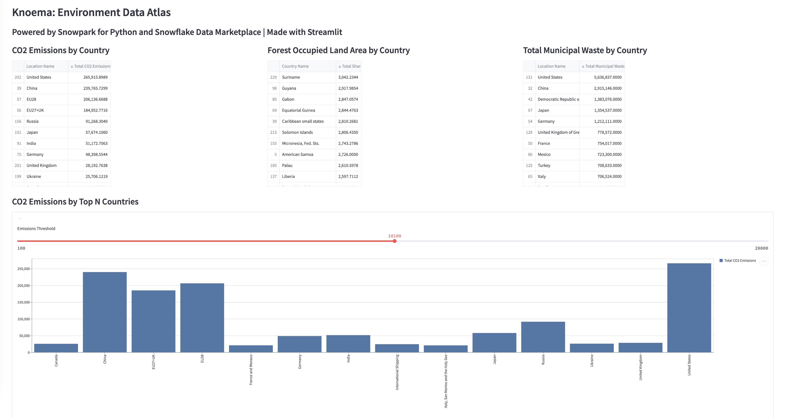
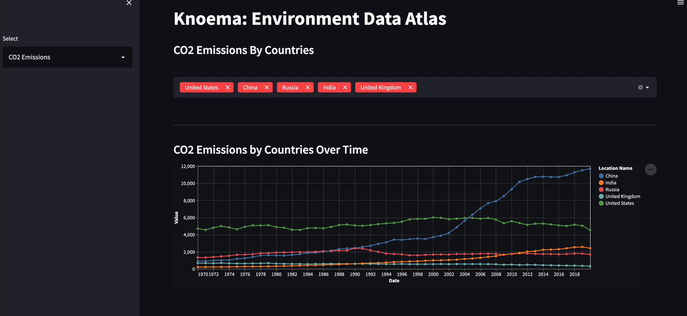
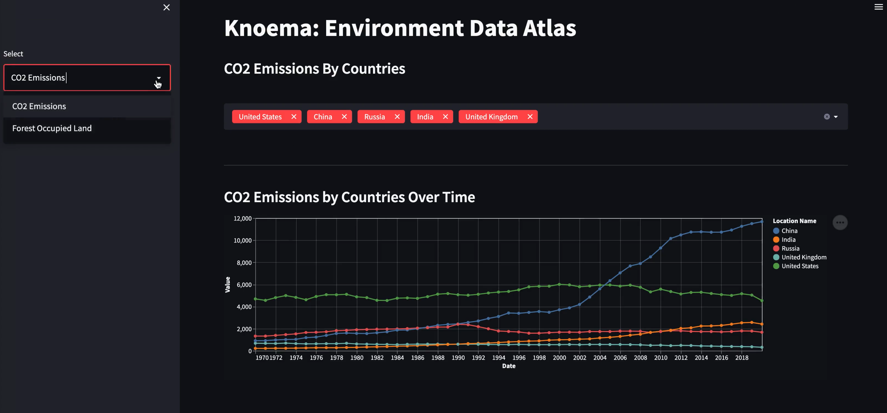
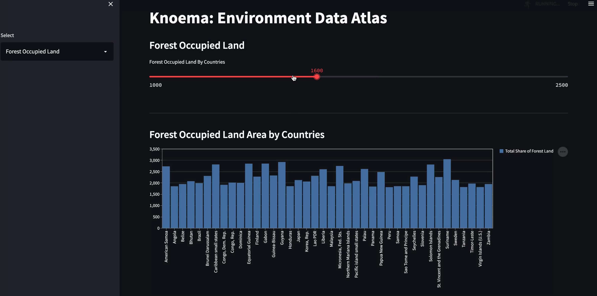

Snowpark at its core provides an API that developers can use to construct DataFrames that are executed lazily on Snowflake's platform. It enables data engineers, data scientists, and developers coding in languages other than SQL such as Python to take advantage of Snowflake's powerful platform without having to first move data out of Snowflake. This enables data application developers to run complex transformations within Snowflake while taking advantage of the built-in unlimited scalability, performance, governance and security features. Learn more about Snowpark.
Streamlit is a pure-Python open-source application framework that enables developers to quickly and easily write data applications. Learn more about Streamlit.
IMPORTANT: If you are using a machine wth Apple M1 chip, follow these instructons to create the virtual environment and install Snowpark Python instead of what's described below.
conda create --name snowpark -c https://repo.anaconda.com/pkgs/snowflake python=3.8
conda activate snowpark
conda install -c https://repo.anaconda.com/pkgs/snowflake snowflake-snowpark-python pandas
pip install streamlit (OR, conda install streamlit)
Troubleshooting pyarrow related issues:
pyarrow installed, you do not need to install it yourself; installing Snowpark automatically installs the appropriate version.pyarrow other than the recommended version 8.0.0, uninstall it before installing Snowpark.pyarrow after installing Snowpark.Let's start by creating a Python script and adding the import statements to include the required libraries.
my_snowpark_streamlit_app.py
# Import required libraries
from snowflake.snowpark.session import Session
from snowflake.snowpark.functions import avg, sum, col,lit
import streamlit as st
import pandas as pd
In this step, you'll create a Session object to connect to your Snowflake. Here's a quick way of doing that, but note that hard coding credentials directly in code is not recommended in production environments. In production environments a better approach would be to load credentials from AWS Secrets Manager or Azure Key Vault, for example.
# Create Session object
def create_session_object():
connection_parameters = {
"account": "<account_identifier>",
"user": "<username>",
"password": "<password>",
"role": "<role_name>",
"warehouse": "<warehouse_name>",
"database": "ENVIRONMENT_DATA_ATLAS",
"schema": "ENVIRONMENT"
}
session = Session.builder.configs(connection_parameters).create()
return session
In the above code snippet, replace variables enclosed in "<>" with your values.
IMPORTANT:
connection_parameters above accordingly.In this step, you'll create three Snowpark DataFrames to load data from tables EDGARED2019, WBWDI2019Jan, and UNENVDB2018 from schema ENVIRONMENT.
# Create Snowpark DataFrames that loads data from Knoema: Environmental Data Atlas
def load_data(session):
# CO2 Emissions by Country
snow_df_co2 = session.table("ENVIRONMENT.EDGARED2019").filter(col('Indicator Name') == 'Fossil CO2 Emissions').filter(col('Type Name') == 'All Type')
snow_df_co2 = snow_df_co2.group_by('Location Name').agg(sum('$16').alias("Total CO2 Emissions")).filter(col('Location Name') != 'World').sort('Location Name')
# Forest Occupied Land Area by Country
snow_df_land = session.table("ENVIRONMENT.\"WBWDI2019Jan\"").filter(col('Series Name') == 'Forest area (% of land area)')
snow_df_land = snow_df_land.group_by('Country Name').agg(sum('$61').alias("Total Share of Forest Land")).sort('Country Name')
# Total Municipal Waste by Country
snow_df_waste = session.table("ENVIRONMENT.UNENVDB2018").filter(col('Variable Name') == 'Municipal waste collected')
snow_df_waste = snow_df_waste.group_by('Location Name').agg(sum('$12').alias("Total Municipal Waste")).sort('Location Name')
# Convert Snowpark DataFrames to Pandas DataFrames for Streamlit
pd_df_co2 = snow_df_co2.to_pandas()
pd_df_land = snow_df_land.to_pandas()
pd_df_waste = snow_df_waste.to_pandas()
In the above code snippet, we're leveraging several Snowpark DataFrame functions to load and transform data. For example, filter(), group_by(), agg(), sum(), alias() and sort().
More importantly, note that at this point nothing is executed on the server because of lazy evaluation–which reduces the amount of data exchanged between Snowflake and the client/application. Also note that when working with Streamlit we need Pandas DataFrames and Snowpark API for Python exposes a method to convert Snowpark DataFrames to Pandas. An action, for example to_pandas() in our case, causes the DataFrame to be evaluated and sends the corresponding generated SQL statement to the server for execution.
At this point, you're technically done with most of the code and all you need to do to render the data in a web application in your browser is to use Streamlit's dataframe() API. For example, st.dataframe(pd_df_co2).
But let's add a few more web components to make our data application a bit more presentable and interactive.
In this step, you'll add...
# Add header and a subheader
st.header("Knoema: Environment Data Atlas")
st.subheader("Powered by Snowpark for Python and Snowflake Data Marketplace | Made with Streamlit")
# Use columns to display the three dataframes side-by-side along with their headers
col1, col2, col3 = st.columns(3)
with st.container():
with col1:
st.subheader('CO2 Emissions by Country')
st.dataframe(pd_df_co2)
with col2:
st.subheader('Forest Occupied Land Area by Country')
st.dataframe(pd_df_land)
with col3:
st.subheader('Total Municipal Waste by Country')
st.dataframe(pd_df_waste)
# Display an interactive bar chart to visualize CO2 Emissions by Top N Countries
with st.container():
st.subheader('CO2 Emissions by Top N Countries')
with st.expander(""):
emissions_threshold = st.number_input(label='Emissions Threshold',min_value=5000, value=20000, step=5000)
pd_df_co2_top_n = snow_df_co2.filter(col('Total CO2 Emissions') > emissions_threshold).toPandas()
st.bar_chart(data=pd_df_co2_top_n.set_index('Location Name'), width=850, height=500, use_container_width=True)
In the above code snippet, a bar chart is constructed using Streamlit's bar_chart() which takes a dataframe as one of the parameters. In our case, that is a subset of the CO2 Emissions by Country dataframe filtered by column Total CO2 Emissions via Snowpark DataFrame's filter() and user-defined CO2 emissions threshold set via Streamlit's user input component slider().
Here's what the entire code in my_snowpark_streamlit_app.py should look like:
# Snowpark
from snowflake.snowpark.session import Session
from snowflake.snowpark.functions import avg, sum, col,lit
import streamlit as st
import pandas as pd
st.set_page_config(
page_title="Environment Data Atlas",
page_icon="🧊",
layout="wide",
initial_sidebar_state="expanded",
menu_items={
'Get Help': 'https://developers.snowflake.com',
'About': "This is an *extremely* cool app powered by Snowpark for Python, Streamlit, and Snowflake Data Marketplace"
}
)
# Create Session object
def create_session_object():
connection_parameters = {
"account": "<account_identifier>",
"user": "<username>",
"password": "<password>",
"role": "<role_name>",
"warehouse": "<warehouse_name>",
"database": "KNOEMA_ENVIRONMENT_DATA_ATLAS",
"schema": "ENVIRONMENT"
}
session = Session.builder.configs(connection_parameters).create()
print(session.sql('select current_warehouse(), current_database(), current_schema()').collect())
return session
# Add header and a subheader
st.header("Knoema: Environment Data Atlas")
st.subheader("Powered by Snowpark for Python and Snowflake Data Marketplace | Made with Streamlit")
# Create Snowpark DataFrames that loads data from Knoema: Environmental Data Atlas
def load_data(session):
# CO2 Emissions by Country
snow_df_co2 = session.table("ENVIRONMENT.EDGARED2019").filter(col('Indicator Name') == 'Fossil CO2 Emissions').filter(col('Type Name') == 'All Type')
snow_df_co2 = snow_df_co2.group_by('Location Name').agg(sum('$16').alias("Total CO2 Emissions")).filter(col('Location Name') != 'World').sort('Location Name')
# Forest Occupied Land Area by Country
snow_df_land = session.table("ENVIRONMENT.\"WBWDI2019Jan\"").filter(col('Series Name') == 'Forest area (% of land area)')
snow_df_land = snow_df_land.group_by('Country Name').agg(sum('$61').alias("Total Share of Forest Land")).sort('Country Name')
# Total Municipal Waste by Country
snow_df_waste = session.table("ENVIRONMENT.UNENVDB2018").filter(col('Variable Name') == 'Municipal waste collected')
snow_df_waste = snow_df_waste.group_by('Location Name').agg(sum('$12').alias("Total Municipal Waste")).sort('Location Name')
# Convert Snowpark DataFrames to Pandas DataFrames for Streamlit
pd_df_co2 = snow_df_co2.to_pandas()
pd_df_land = snow_df_land.to_pandas()
pd_df_waste = snow_df_waste.to_pandas()
# Use columns to display the three dataframes side-by-side along with their headers
col1, col2, col3 = st.columns(3)
with st.container():
with col1:
st.subheader('CO2 Emissions by Country')
st.dataframe(pd_df_co2)
with col2:
st.subheader('Forest Occupied Land Area by Country')
st.dataframe(pd_df_land)
with col3:
st.subheader('Total Municipal Waste by Country')
st.dataframe(pd_df_waste)
# Display an interactive chart to visualize CO2 Emissions by Top N Countries
with st.container():
st.subheader('CO2 Emissions by Top N Countries')
with st.expander(""):
emissions_threshold = st.slider(label='Emissions Threshold',min_value=5000, value=20000, step=5000)
pd_df_co2_top_n = snow_df_co2.filter(col('Total CO2 Emissions') > emissions_threshold).to_pandas()
st.bar_chart(data=pd_df_co2_top_n.set_index('Location Name'), width=850, height=500, use_container_width=True)
if __name__ == "__main__":
session = create_session_object()
load_data(session)
The fun part! Assuming your application script is free of syntax and connection errors, you're ready to run the application.
To run the application, execute streamlit run my_snowpark_streamlit_app.py at the command line.
In the application:

Here are a couple of tips and tricks to note:
st.session_state to save objects like snowflake.snowpark.Session so it's only created once during a session. For example:if "snowpark_session" not in st.session_state:
session = Session.builder.configs(json.load(open("connection.json"))).create()
st.session_state['snowpark_session'] = session
else:
session = st.session_state['snowpark_session']
streamlit run new_snowpark_streamlit_app.py.


Congratulations! You've successfully completed the Getting Started with Snowpark for Python and Streamlit quickstart guide.